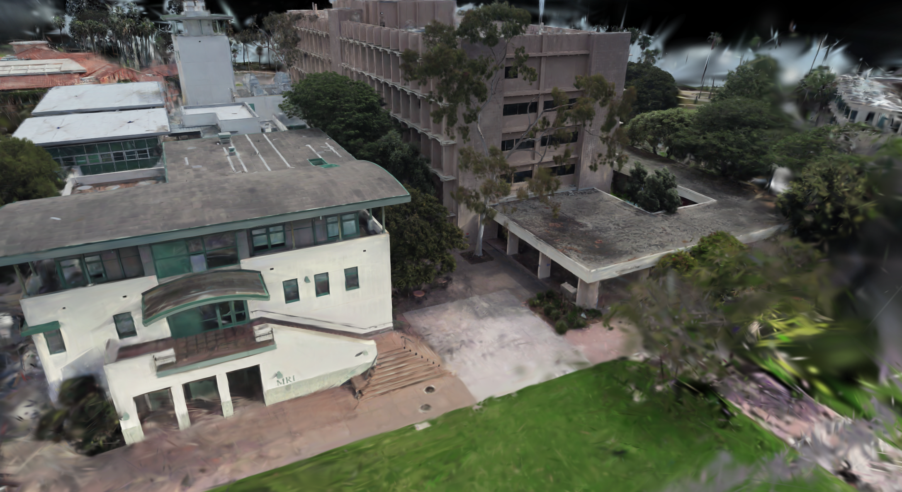
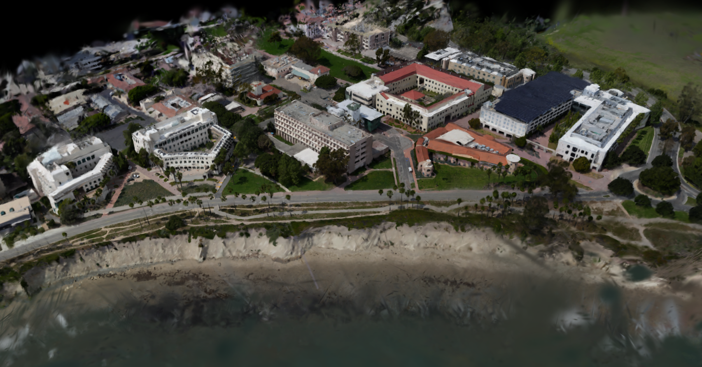

Gaussian Splat
Gaussian Splat
Kavli Institute (KITP)
Full Gaussian splat of KITP's distinctive courtyard complex, reconstructed from ground-level imagery.
Open viewerdrone & ground imagery · centimeter-accurate RTK GPS · 3D Gaussian Splatting
University of California, Santa Barbara
A fly-through of the merged Gaussian splat across UCSB.
Google Earth offers 360° panoramas only at fixed street-level points. GoGaucho provides classroom search but lacks visual context and only shows a bird's-eye projection. Prospective students across the country and around the world rely on these limited tools to understand a place they may not have the time or money to visit in person — and current students often spend their first weeks lost between buildings they've never seen at ground level.
VistaVisio lets users explore and navigate UCSB as if they were actually there — in a web browser or through virtual reality on Apple Vision Pro. By preserving both visual fidelity and real-world scale, aligned to geographic coordinates, the platform delivers an experience that satellite imagery and street-view tools cannot. Students, professors, and visitors can walk campus from anywhere, at any time.
VistaVisio develops an interactive, high-fidelity 3D reconstruction of the UCSB campus accessible through web browsers and virtual reality headsets. Existing tools such as Google Maps offer limited ground-level campus visualization, creating barriers for prospective students, visitors, researchers, and event planners seeking to explore the environment remotely. The system processes thousands of high-quality ground and aerial images paired with centimeter-accurate GPS metadata from EMLID Rx2 receivers through a three-stage pipeline: dataset filtering, Structure-from-Motion (SfM), and Multi-View Stereo (MVS). The resulting model enables immersive virtual tours of the campus, providing a detailed, accessible alternative to physical site visits and establishing a scalable framework for future campus mapping and spatial analysis.
Images are captured per-building using iPhones mounted alongside EMLID Rx2 RTK GPS receivers (centimeter-level accuracy) and supplemented with aerial imagery from Wingtra and DJI drones. Each batch passes through a privacy and quality filter — face and license plate blurring via fine-tuned YOLO models, blur detection by Laplacian variance, exposure validation by histogram analysis, and SegFormer-based sky segmentation to suppress sky-region keypoints.
The cleaned dataset feeds a hybrid HLOC + COLMAP Structure-from-Motion pipeline: SuperPoint extracts dense, repeatable keypoints; SuperGlue's attention-based matcher produces geometrically consistent correspondences; COLMAP handles geometric verification, incremental registration, triangulation, and bundle adjustment, with GPS coordinates injected as pose priors. We use the Umeyama algorithm with RANSAC to align per-building reconstructions into a shared geo-referenced frame.
For dense reconstruction we use gsplat for the majority of campus and GaussianPlant for vegetation-heavy regions like the lawns and tree canopies. Per-building splats are merged into the global coordinate frame using GPS alignment, with low-opacity and oversized Gaussians filtered out and a 0.05 m voxel-grid pruning step to remove duplicates in overlap regions. The final model is delivered to users through a Unity WebGL viewer and through a third-party app (MetalSplat) for Apple Vision Pro.
Five-stage pipeline from raw capture to interactive viewer.
Click any building to open its interactive Gaussian splat viewer. Rendering runs entirely in your browser via WebGL; first load may take a few seconds while the compressed splat streams in.
Gaussian Splat
Full Gaussian splat of KITP's distinctive courtyard complex, reconstructed from ground-level imagery.
Open viewer
Gaussian SplatMerged Gaussian splat of Harold Frank Hall and the Materials Research Lab, two of the core engineering buildings on campus.
Open viewer
Gaussian SplatAerial Gaussian splat of the east side of campus captured from drone imagery, covering rooftops and building exteriors not visible from the ground.
Open viewerSparse point cloud reconstruction using Wingtra drone footage of East Side of Campus.
Sparse point cloud reconstruction of all Wingtra drone flight paths and most buildings we collected ground-level + DJI drone data for.
Dense point cloud reconstruction of Kavli Institude of Theoretical Physics.
@misc{vistavisio2026,
title = {VistaVisio: An Immersive 3D Reconstruction of the UCSB Campus},
author = {Jacobs, Ari and Wang, Jeffery and Diaz, Saul and Hernandez, Kevin and Gill, Guntash and Tran, Preston and Nhieu, Nathan and Li, Jason and Liu, Joshua},
year = {2026},
note = {Senior capstone project, University of California, Santa Barbara},
url = {https://your-user.github.io/vistavisio}
}
We thank Professor B.S. Manjunath, Chandrakanth Gudavalli, Charvi Mendiratta, Prof. Yoga Isukapalli, Prof. Ilan Ben-Yaacov, the UCSB ML Lab, and many more for providing resources and support throughout this project. We are grateful to UCSB ECE Department and IFT for supporting equipment costs, including the EMLID Rx2 RTK GPS receiver and the Apple Vision Pro headset used for VR deployment.
VistaVisio builds on a broad ecosystem of open-source work, including COLMAP, HLOC, SuperPoint & SuperGlue, gsplat, and GaussianPlant.
Page template inspired by ReconFusion.